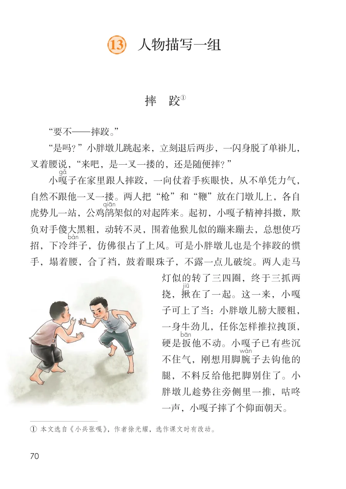
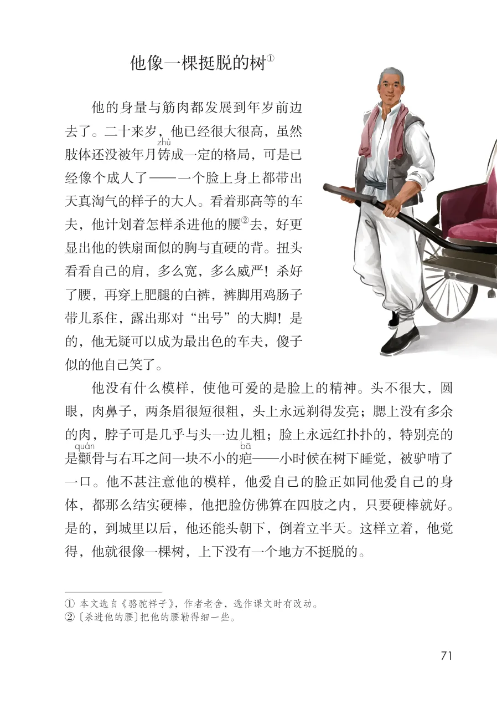
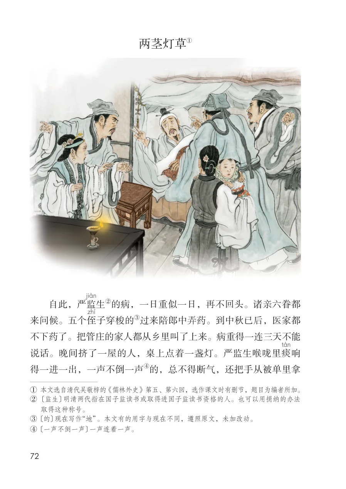
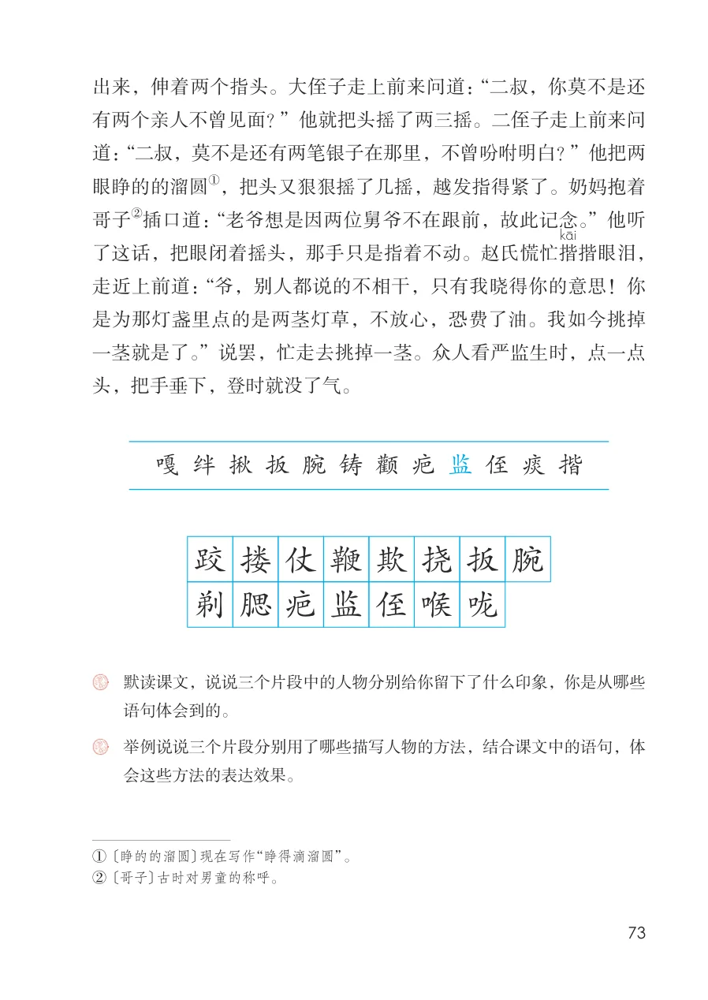

展开章节菜单
13 人物描写一组
摔 跤
“要不—摔跤。”
“是吗？”小胖墩儿跳起来，立刻退后两步，一闪身脱了单褂儿，叉着腰说，“来吧，是一叉一搂的，还是随便摔？”
子在家里跟人摔跤，一向仗着手疾眼快，从不单凭力气，自然不跟他一叉一搂。两人把“枪”和“鞭”放在门墩儿上，各自虎势儿一站，公鸡鹐
架似的对起阵来。起初，小嘎子精神抖擞，欺负对手傻大黑粗，动转不灵，围着他猴儿似的蹦来蹦去，总想使巧招，下冷绊
子，仿佛很占了上风。可是小胖墩儿也是个摔跤的惯手，塌着腰，合了裆，鼓着眼珠子，不露一点儿破绽。两人走马
灯似的转了三四圈，终于三抓两
挠，揪
在了一起。这一来，小嘎
子可上了当：小胖墩儿膀大腰粗，
一身牛劲儿，任你怎样推拉拽顶，
他不动。小嘎子已有些沉
不住气，刚想用脚腕
腿，不料反给他把脚别住了。小
胖墩儿趁势往旁侧里一推，咕咚
一声，小嘎子摔了个仰面朝天。
查看教材原页（保留全部图片、注音与原始排版）

他像一棵挺脱的树
他的身量与筋肉都发展到年岁前边
去了。二十来岁，他已经很大很高，虽然
肢体还没被年月铸
成一定的格局，可是已
经像个成人了—一个脸上身上都带出
天真淘气的样子的大人。看着那高等的车
夫，他计划着怎样杀进他的腰
显出他的铁扇面似的胸与直硬的背。扭头
看看自己的肩，多么宽，多么威严！杀好
了腰，再穿上肥腿的白裤，裤脚用鸡肠子
带儿系住，露出那对“出号”的大脚！是
的，他无疑可以成为最出色的车夫，傻子
似的他自己笑了。
他没有什么模样，使他可爱的是脸上的精神。头不很大，圆
眼，肉鼻子，两条眉很短很粗，头上永远剃得发亮；腮上没有多余
的肉，脖子可是几乎与头一边儿粗；脸上永远红扑扑的，特别亮的
bQ—小时候在树下睡觉，被驴啃了
一口。他不甚注意他的模样，他爱自己的脸正如同他爱自己的身
体，都那么结实硬棒，他把脸仿佛算在四肢之内，只要硬棒就好。
是的，到城里以后，他还能头朝下，倒着立半天。这样立着，他觉
得，他就很像一棵树，上下没有一个地方不挺脱的。
② 〔杀进他的腰〕把他的腰勒得细一些。
查看教材原页（保留全部图片、注音与原始排版）

两茎灯草
自此，严监来问候。五个侄不下药了。把管庄的家人都从乡里叫了上来。病重得一连三天不能说话。晚间挤了一屋的人，桌上点着一盏灯。严监生喉咙里痰得一进一出，一声不倒一声
② 〔监生〕明清两代指在国子监读书或取得进国子监读书资格的人。也可以用捐纳的办法
③ 〔的〕现在写作“地”。本文有的用字与现在不同，遵照原文，未加改动。
④ 〔一声不倒一声〕一声连着一声。
查看教材原页（保留全部图片、注音与原始排版）

出来，伸着两个指头。大侄子走上前来问道：“二叔，你莫不是还
有两个亲人不曾见面？”他就把头摇了两三摇。二侄子走上前来问
道：“二叔，莫不是还有两笔银子在那里，不曾吩咐明白？”他把两
眼睁的的溜圆
哥子
了这话，把眼闭着摇头，那手只是指着不动。赵氏慌忙揩
揩眼泪，
走近上前道：“爷，别人都说的不相干，只有我晓得你的意思！你
是为那灯盏里点的是两茎灯草，不放心，恐费了油。我如今挑掉
一茎就是了。”说罢，忙走去挑掉一茎。众人看严监生时，点一点
头，把手垂下，登时就没了气。
会这些方法的表达效果。
② 〔哥子〕古时对男童的称呼。
查看教材原页（保留全部图片、注音与原始排版）
